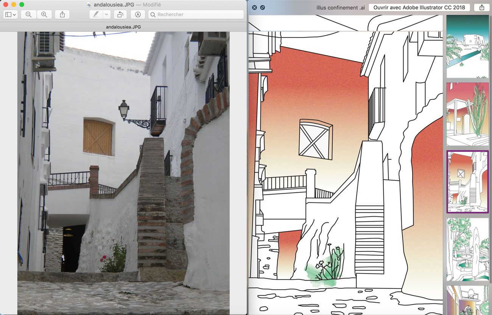

- ←
- Passe-temps
- →
#ILLUSTRATIONS #PHOTOS #VOYAGES

Dessins Illustrator
Durant la période de l'épidémie Covid19 je me suis plongée dans les archives de photos de voyages de la famille. Après avoir prelevé l'une d'entre elles j'ai décidé de travailler sur illustrator, format carte postale. Le dessin par le trait simplifié et l'ajout de dégradé de couleurs.
